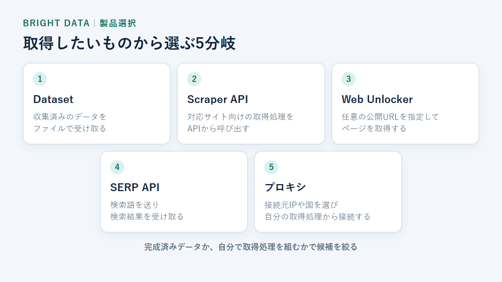
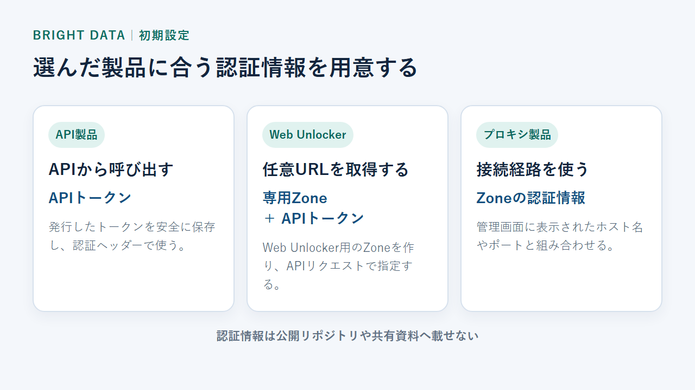
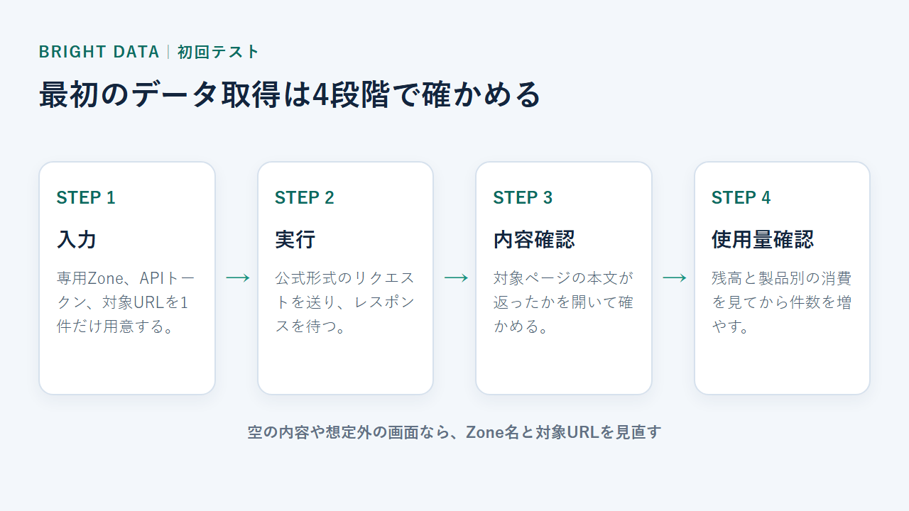
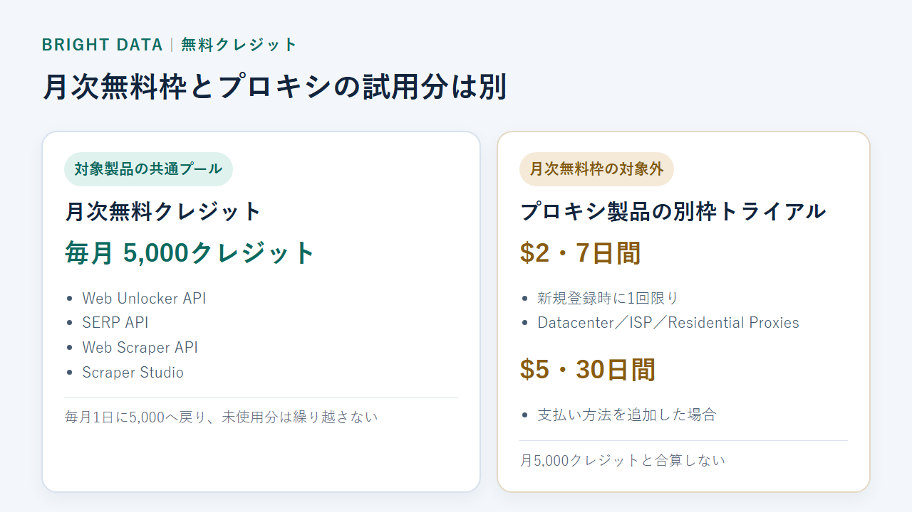

Bright Dataの使い方【初心者向け】登録・製品選びから初回のデータ取得まで
Bright Dataは、Webサイトからデータを集めるための製品群です。既製データの購入から、検索結果の取得、プロキシ経由の接続まで扱えます。
初めて使う人が迷いやすいのは、製品の違いやKYC、無料クレジットの範囲です。ここでは、登録から最初のデータ取得までを順に説明します。
Bright Dataを使い始める最短5ステップ
使い始めるときの流れは、アカウント作成、製品選択、認証情報の発行、テスト取得、使用量確認です。KYCが必要かどうかは、製品や権限によって変わります。この記事では、Web Unlocker APIで1件取得する例まで扱います。
- アカウントを作成する
- 取得方法に合う製品を選ぶ
- APIトークンやZoneを用意する
- 少量のテスト取得を実行する
- 結果とクレジット消費を確認する

登録から初回取得までの流れ
アカウントを作成したら、まず取得したいデータに合う製品を一つ選びます。Web Unlocker APIなら、専用ZoneとAPIトークンを準備し、対象URLを1つ送信します。
始める前に用意するもの
登録を始める前に、次の三つを用意しておくと途中で止まりません。
- 連絡を受け取れるメールアドレス
- 欲しいデータが分かるURLや検索語
- データを取得する目的の説明
KYC対象の製品では、企業情報や追加書類を求められる場合があります。使いたい製品が対象か、先に確認しておきましょう。
登録前に、対象製品と初回設定の入口を確認できます。
アカウント登録とKYCの進め方
アカウントを作っただけで、必ずKYCが始まるわけではありません。Residential Networkを使う場合や特別な権限を申請する場合は、企業情報や利用目的の確認が加わります。
アカウントを作成してメールを確認する
登録ページでは、Work emailのほかGoogle、GitHub、SSOも選べます。いずれかでアカウントを作り、画面や確認メールの案内に従って管理画面へ進みます。
月次無料クレジットの対象製品は、クレジットカードを登録せずに始められます。プロキシ製品は同じ無料枠の対象ではないため、製品選択を先に済ませるのが大切です。
アカウント作成後、選んだ製品に応じて必要な確認へ進めます。
KYCが必要になる製品と確認内容
KYCが原則必要なのは、Residential Networkまたは特別な権限へアクセスする場合です。基本となる確認項目は、企業ドメインのメール、企業情報、利用目的、連絡先です。
身分証明書やビデオ通話は、全申請で固定の必須項目ではありません。追加確認として求められる場合があります。申請後のステータス更新は最大48時間が目安です。
一方、robots.txtに従うImmediate Residential Accessには、KYCなしで使える例外があります。Residential Networkで先へ進めないときは、選んだアクセス方法と審査状況を確認してください。
目的に合う製品を選ぶ
製品名から選ぶよりも、受け取りたいものと自前で組む範囲から逆算すると絞れます。完成済みデータならDataset、特定サイト向けの取得ならScraper API、任意ページならWeb Unlockerが候補です。
- 既製データが欲しい：Dataset
- 特定サイトから取得したい：Scraper API
- 任意ページを取得したい：Web Unlocker
- 検索結果が欲しい：SERP API
- 接続元IPを変えたい：プロキシ

DatasetとScraper APIが向いているケース
Datasetは、収集済みのデータをファイルとして受け取る製品です。取得処理を自作せずに済む一方、用意されたデータセットに必要な項目があるかを先に確認します。任意ページをその場で取得したい場合には向きません。
Scraper APIは、対応サイト向けの取得処理をAPIから呼び出す製品です。構造化された出力を受け取れますが、対象サイトと出力形式は製品ごとに異なります。対応外の任意ページを取りたい場合は、Web Unlockerと比較します。
Web UnlockerとSERP APIが向いているケース
Web Unlockerは、任意の公開URLを指定し、接続制御や再試行をBright Data側へ任せるAPIです。URL送信の実装は必要ですが、通常のプロキシより取得処理を減らせます。クリックや長いセッションが必要な画面操作には向きません。
SERP APIは、検索語を送り、検索結果をデータとして受け取る製品です。検索結果に特化しているため、一般のWebページを自由に取得する製品ではありません。
プロキシ製品が向いているケース
自分の取得プログラムから接続し、接続元の国やネットワークを選びたい場合はプロキシ製品を使います。プロキシ製品が提供するのは接続経路です。取得、再試行、保存は利用者側で組みます。
Residential、ISP、Datacenterでは、ネットワークの性質と料金体系が異なります。実装の自由度は高いものの、完成済みデータが欲しい場合や取得処理を減らしたい場合には、DatasetやWeb Unlockerのほうが候補です。
APIトークンとZoneを初期設定する
API製品はAPIトークンを使い、Web Unlockerでは専用Zoneも指定します。プロキシ製品はZoneの認証情報で接続します。
- 利用する製品を一つ選ぶ
- 対応する認証情報を発行する
- 認証情報を安全な場所へ保存する
- 公式サンプルを開く

APIトークンを発行する
API製品を選んだら、管理画面からAPIトークンを発行します。トークンは公開リポジトリや共有資料へ載せず、安全な場所に保存してください。
プロキシ用のZoneを作成する
Zoneは、利用するプロキシ製品や接続条件をまとめる設定単位です。製品を選んでZoneを作り、そこで発行された認証情報を自分の接続設定に入力します。
ホスト名やポートは、管理画面に表示された値を使います。別の製品向けに発行された値を流用すると、認証エラーの原因になります。
登録後、利用する製品に合う認証方法を選べます。
最初のデータ取得を試す
ここではWeb Unlocker APIを例に、公開URLを1件取得します。管理画面で専用ZoneとAPIトークンを用意し、公式形式のリクエストを送ります。
対象製品では、登録後に少量の取得から動作を確かめられます。
- Web Unlocker用Zoneを作る
- APIトークンとZone名を控える
- 対象URLを一つ決める
- cURLでリクエストを送る
- 本文と使用量を確かめる

Web管理画面のサンプルで試す
管理画面の製品一覧からWeb Unlockerを選び、専用Zoneを作ります。続いてAPIトークンを発行し、Zone名と分けて控えてください。
既存のプロキシ用Zoneは使わず、Web Unlocker用に作ったZoneを指定します。管理画面がどこまで日本語表示に対応しているかは公開されていないため、製品名とZone名を手掛かりに進めます。
APIまたはCLIで1件だけ取得する
APIトークン、Zone名、対象URLを自分の値へ置き換えます。APIトークンはコードへ直接書かず、環境変数へ保存してください。
curl https://api.brightdata.com/request \
-H "Authorization: Bearer $BRIGHT_DATA_API_TOKEN" \
-H "Content-Type: application/json" \
-d '{"zone":"YOUR_WEB_UNLOCKER_ZONE","url":"https://example.com","format":"raw"}'
レスポンスが返ったら内容を開き、対象ページの本文が含まれているか確認します。空の内容や想定外の画面なら、保存や件数追加へ進む前にZone名と対象URLを見直します。
取得結果と使用量を確認する
実行後は、対象ページの本文、取得件数、消費クレジットの三点を確認します。
成功したかをレスポンスで確かめる
Web Unlockerでは、エラーの有無に加え、指定したURLの本文が返ったかも確認します。チャレンジ画面や空の内容なら、成功件数として扱わずに設定を見直してください。
DatasetやScraper APIを選んだ場合は出力形式が異なります。製品が違っても、対象、必要な項目、取得件数の三点は共通して確認します。
認証エラー・Zone未作成・KYC待ちを切り分ける
認証エラーが出たら、BearerトークンとZone名を見直します。次に、Web Unlocker用Zoneが作られているかを確認してください。
Residential Networkの利用手続きで止まる場合は、KYCの審査状況も確認します。追加対応が必要なら、管理画面の案内か公式サポートから進めます。
クレジット残高と製品別の消費を確認する
対象製品の利用分は、一つの月次無料クレジットから消費されます。製品ごとに別々の5,000クレジットが付く仕組みではありません。
管理画面では残高と利用した製品を確認します。CLIを使う場合、budgetは残高やZone別コストの確認に使います。非同期ジョブの進行を見るstatusとは用途が異なります。
開始前に、無料クレジットの対象と消費単位を確認できます。
無料クレジットの対象と有料化の目安
対象製品には、月5,000クレジットの共通プールがあります。Datacenter、ISP、Residential Proxiesは対象外で、別枠のトライアルクレジットが用意されています。

月次無料クレジットを使える製品
月次無料クレジットの対象は、次の製品です。
- Web Unlocker API
- SERP API
- Web Scraper API
- Scraper Studio
Web Unlocker API、SERP API、Web Scraper APIは、リクエストまたはレコードごとに1クレジットを消費します。Scraper Studioはページロードごとに1クレジットです。
クレジットは毎月1日に5,000へ戻り、未使用分は翌月へ繰り越されません。複数製品を試す場合は、それぞれの消費を合算して考えます。
プロキシ製品は別枠のトライアル
Datacenter、ISP、Residential Proxiesは、月次無料クレジットの対象外です。新規登録時には、一度だけ$2のトライアルクレジットが付き、7日間使えます。
支払い方法を追加すると$5のボーナスが付き、有効期間は30日間です。
月次の無料枠と、この一度きりの試用分を混同しないようにしてください。
有料プランへ移る前に見る項目
有料化を決める前に、次の四点を記録します。
- 一度に取得する件数
- 取得ごとのクレジット消費
- 毎月の実行回数
- 継続して使う製品
月額コミットの未使用分は翌月へ繰り越されません。サブスクリプション料金は原則として取消・返金の対象外です。まず少量を取得して消費量を測り、その結果をもとに契約を選びます。
登録前に、使いたい製品が月次無料クレジットの対象かを確かめられます。
Bright Dataの使い方でよくある質問
日本語の公式サイトはありますが、管理画面全体がどこまで日本語に対応しているかは、公開情報で確認できません。APIやプロキシには技術設定も必要です。
管理画面は日本語で使える？
Bright Dataには日本語の公式サイトと料金ページがあります。ただし、管理画面全体が日本語になるかは公開情報から判断できません。
英語の項目名を基準に進め、必要ならブラウザの翻訳機能を補助に使う方法があります。これはBright Dataが提供する日本語UI機能ではありません。
日本市場向けの支援サービスは案内されています。ただし、日本語のメールやチャットでどこまで対応するかは公開情報で確認できません。
コードを書かなくても使える？
Datasetや管理画面から操作できる製品なら、コードを書かずに進められる場合があります。既製データを受け取るだけなら、自分で取得処理を組まない選択もできます。
API、CLI、プロキシ接続を使う場合は、認証情報やコマンドの設定が必要です。コードを避けたいなら、まずDatasetや画面操作型の製品が目的に合うかを見てください。
個人でも登録できる？KYCは必須？
アカウント登録とKYCは別の手続きです。すべての製品で、登録直後にKYCが必須になるわけではありません。
Residential NetworkのKYCでは、企業ドメインのメールや企業情報が前提です。そのため個人利用には制約があります。一部にはKYCなしで使えるアクセス方法もあります。
日本から使える支払い方法は？
クレジットカード、PayPal、Alipay、Payoneer、Google Pay、Apple Payに対応しています。大口アカウント向けには、Wire transferとAmazon Marketplaceも案内されています。
JCB対応や日本の適格請求書発行事業者番号は、公開情報で確認できません。日本での税務上の扱いは、必要に応じて税理士へ相談してください。
まとめ：製品を一つに絞り、少量の取得から始める
先に欲しいデータと実装できる範囲を決め、対応する製品で1件だけ試します。Web Unlockerなら、専用Zone、APIトークン、対象URLの三つが初回取得に必要です。本文とクレジット消費を見てから、有料化を判断してください。
登録後に最初に選ぶもの
最初に決めるのは、既製データで足りるか、対象が特定サイトか任意URLか、自分で取得処理を組むかの三点です。ここが決まれば、Dataset、Scraper API、Web Unlocker、プロキシのどれを契約するかを絞れます。
件数を増やす前に確認するもの
取得件数を本番の規模まで増やす前に、取得結果の本文、Zone別コスト、無料クレジットの残高を確認します。Residential Networkを使う場合は、KYCの状態も確認します。
有料契約では返金条件と月額コミットも先に読みます。1件の取得と消費量が想定どおりなら、毎月の取得量に合わせて契約を選んでください。
使いたい製品を選び、対象なら無料クレジットで初回取得へ進めます。